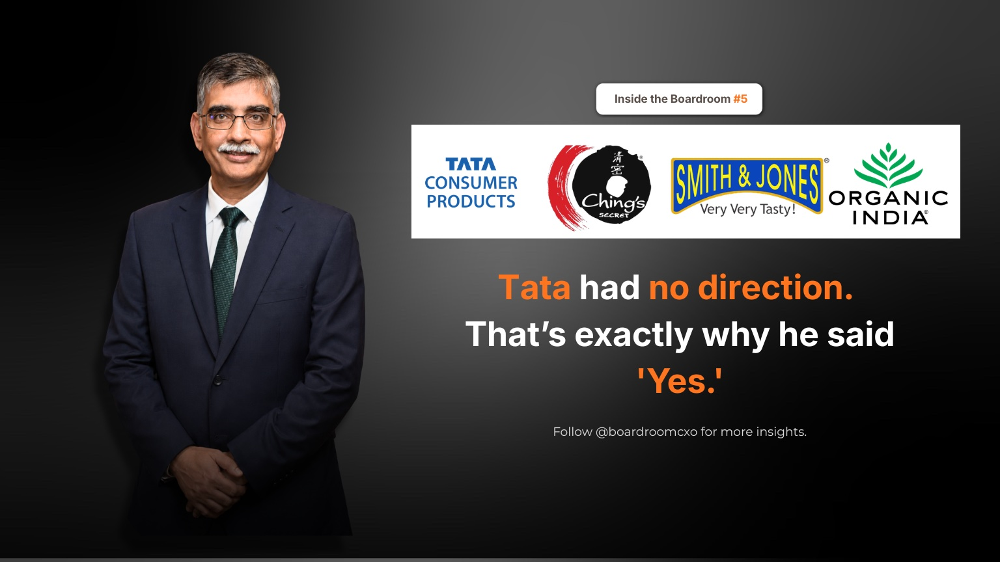

Key Takeaways
- Sunil D'Souza first turned down Tata's consumer job in 2020, then took it, and in FY26 Tata Consumer Products posted ₹20,290 crore in revenue.
- D'Souza ran acquisitions and distribution together, adding Ching's Secret, Smith & Jones and Organic India while reaching close to 290 million households.
- Boards should be explicit about whether a mandate is to run something or to invent something, because an unclear brief often signals a build mandate.
In 2020, Sunil D'Souza was offered one of the biggest jobs in Indian FMCG. He initially said no.
He was running Whirlpool India at the time, at a conference in San Francisco, when the call came. Tata wanted him to lead its consumer business. He turned it down. His stated reason was blunt: the company looked like it had no direction.
Then someone told him something that changed his mind.
The Objection Was the Job Description
The very thing putting him off, the lack of direction, was the exact reason N. Chandrasekaran wanted him in the chair. Tata did not need a caretaker for a business that already knew what it was. It needed someone to build something that did not exist yet. D'Souza flew to Bombay House, met the chairman, and took the job.
What he inherited was not a modern FMCG company. It was a tea business and a salt business, both decades old, sitting inside a group that had merged its beverages arm with a chemicals food division only a year earlier. Chandrasekaran's brief to him was blunt: "I want to be an FMCG company."
Most leaders in that seat would have polished what already existed, tightened the tea business, defended the salt franchise, called it a turnaround. D'Souza expanded the whole thing instead.
Why "No Direction" Was the Real Opportunity
This is the part most retellings of the story flatten into a simple redemption arc. It is worth being specific about the mechanism.
A company with a clear, working strategy does not need to hire a new leader from outside to execute it. It promotes from within, because continuity is the whole point. A company that hires an outsider into an ambiguous mandate is usually signalling something different: leadership already knows the current shape of the business is not the end state, and they are looking for someone who can define the next one without a template to follow.
D'Souza's initial instinct, that a lack of direction was a red flag, is the instinct most experienced operators have, and it is usually correct. What separates the outcome here is that he checked that instinct against the actual intent behind the ambiguity before walking away. An unclear brief from a board that has already decided to build something new is a very different opportunity than an unclear brief from a board that is simply avoiding a hard decision.
How the Build Actually Happened
D'Souza did not turn Tata Consumer into an FMCG company by improving tea and salt margins. He did it by category expansion, executed through acquisition and distribution, at the same time.
He brought in Ching's Secret to own Desi Chinese and Smith & Jones for Italian-style cooking. He acquired Organic India. He pushed hard into packaged staples, pulses, and ready-to-drink, categories a tea and salt company had no obvious right to win on brand history alone. None of that works without the second half of the strategy: he built distribution until the business reached close to 290 million households and pushed toward nearly four million outlets across India.
Acquisitions without distribution reach become a portfolio of disconnected brands. Distribution reach without new categories to sell through it is wasted capacity. D'Souza ran both tracks together, which is the actual difficulty in this kind of mandate and the reason it cannot be delegated to a single function head.
Where the Numbers Landed
Six years later, in FY26, Tata Consumer Products posted ₹20,290 crore in revenue. It describes itself as among the top 10 food and beverage companies in India. A business that Chandrasekaran himself described as lacking a clear identity is now a recognised category player across tea, salt, packaged food, and ready-to-drink.
D'Souza was hired because the picture was unclear. The picture only got clearer because he was willing to draw it.
The Boardroom Read
Boards and founders routinely write job descriptions that sound like a request for a manager when what they actually need is a builder, and the mismatch shows up as candidates like D'Souza's first instinct, a qualified operator who takes one look at the ambiguity and declines. The fix is not to make the brief sound cleaner than it is. It is to be explicit, the way Chandrasekaran was, about whether the mandate is to run something or to invent something.
For a candidate evaluating a role like this, the diagnostic question is not "does this company have a clear strategy." It is "does the person making this offer know exactly why the strategy is unclear, and do they want it solved or do they want it hidden." D'Souza got a straight answer to that question before he said yes the second time.
The unclear brief is often the one worth taking, but only after someone has told you, honestly, why it is unclear.
Sources
- Tata Consumer Products, Results for the Quarter and Year ended 31st March 2026, May 2026
- Tata Consumer Products, Investors, accessed October 2026
Related Reading
Ramesh Chauhan Sold Thums Up to Build Bisleri From Scratch
Read → R · 02 Founder Leadership · July 2026Sudhir Sitapati: Why He Left HUL's Safest Seat for Godrej
Read → R · 03 Founder Leadership · July 2026Shailesh Jejurikar: P&G's First Indian-Origin CEO in 187 Years
Read →Hiring for a mandate that isn't fully defined yet?
The hardest CXO briefs are the ambiguous ones, build a category, expand into new territory, define what the business becomes next. We place leaders who can create structure, not just execute an existing plan.
Brief Us on a Mandate See all Sales & Retail roles we fill →